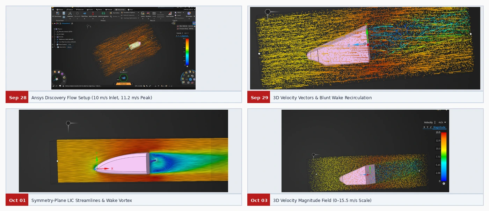

CFD
Four practice simulations on teammates’ reference nosecones explored external flow setup, velocity visualization, and wake recirculation.
Development timeline
Set up the air domain
The model used a 10 m/s uniform inlet, a 0 Pa gauge pressure outlet, stationary no-slip body walls, and free-slip outer boundaries. The initial run reported a peak speed of 11.2 m/s and a pressure drop of 0.65 Pa.
Inspect flow direction
3D velocity vectors showed how flow moved around the wedge. Symmetry-plane LIC streamlines made the low-speed recirculation behind the blunt base visible.
Read the velocity field
The particle visualization used a velocity scale up to 15.5 m/s. Flow sped up along the flanks while a slower wake formed behind the base, informing the decision to use a flush nose-to-body joint.
Design figures


The reported values apply to the reference simulations. Drag, downforce, and radiator performance for the final assembly remain unquantified in the portfolio.
Next case study → Bodywork